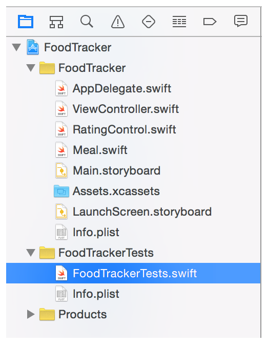

In this lesson, you’ll define and test a data model for the FoodTracker app. A data model represents the structure of the information stored in an app.
このレッスンでは、あなたはFoodTrackerアプリのためのデータモデルを定義してテストします。あるデータモデルは、あるアプリの中に格納される情報の構造を表現します。
Learning Objectives
学習する目標
At the end of the lesson, you’ll be able to:
このレッスンの終わりに、あなたが出来るようになるのは：
Create a data model
データモデルの作成
Write failable initializers for a custom class
失敗できるイニシャライザをカスタムクラスに対して書く
Demonstrate a conceptual understanding of the difference between failable and nonfailable initializers
失敗できるそして失敗できないイニシャライザの間の違いの概念的理解を実地にうつす
Test a data model by writing and running unit tests
ユニットテストを書いて実行することでデータモデルをテストする
Create a Data Model
データモデルの作成
Now you’ll create a data model to store the information that the meal scene needs to display. To do so, you define a simple class with a name, a photo, and a rating.
今あなたはあるデータモデルを作成して、食事シーンが表示するために必要とする情報を格納しようとしています。そうするために、あなたはある簡単なクラスを名前、写真、そして格付けを使って定義します。
To create a new data model class
新しいデータモデルを作成するには
Choose File > New > File (or press Command-N).
File > New > Fileを選んでください（またはコマンド-Nを押します）。
At the top of the dialog that appears, select iOS.
現れたダイアログの一番上で、iOSを選択してください。
Select Swift File, and click Next.
Swift Fileを選んで、Nextをクリックしてください。
You’re using a different process to create this class than the RatingControl class you created earlier (iOS > Source > Cocoa Touch Class), because you’re defining a base class for your data model, which means it doesn’t need to inherit from any other classes.
あなたは、以前にあなたが作成したRatingControlクラス（iOS > Source > Cocoa Touch Class）とは異なる過程でこのクラスを作成しています、なぜならあなたが定義しているのはあなたのデータモデルのためのベースクラスだからです、それが意味するのは、それが何ら他のクラスから継承する必要がないということです。
In the Save As field, type Meal.
Save As欄において、Mealをタイプしてください。
The save location defaults to your project directory.
保存場所は、初期状態であなたのプロジェクトディレクトリです。
The Group option defaults to your app name, FoodTracker.
Groupオプションは、初期状態であなたのアプリ名、FoodTrackerです。
In the Targets section, your app is selected and the tests for your app are unselected.
Targets区画において、あなたのアプリが選択されて、あなたのアプリのためのテストは選択されません。
Leave these defaults as they are, and click Create.
これらの初期値はそれらのままにしておきます、そしてCreateをクリックします。
Xcode creates a file called Meal.swift. In the Project navigator, drag the Meal.swift file and position it under the other Swift files, if necessary.
Xcodeは、Meal.swiftと呼ばれるファイルを作成します。Projectナビゲータにおいて、Meal.swiftファイルをドラッグして、それが他のSwiftファイルの下に位置するようにしてください、もし必要ならば。
In Swift, you can represent the name using a String, the photo using a UIImage, and the rating using an Int. Because a meal always has a name and rating but might not have a photo, make the UIImage an optional.
Swiftでは、あなたは名前をStringを使って、写真はUIImageを使って、そして格付けはIntを使って表すことができます。食事は、常に名前と格付けを持つが写真を持つとは限らないことから、UIImageをオプショナルにしてください。
To define a data model for a meal
データモデルを食事に対して定義するには
If the assistant editor is open, return to the standard editor by clicking the Standard button.
アシスタントエディタが開いているならば、標準エディタにStandardボタンをクリックすることで戻ってください。
Open Meal.swift.
Meal.swiftを開いてください。
Change the import statement to import UIKit instead of Foundation:
インポート文を変更してUIKitをFoundationの代わりにインポートしてください：
importUIKit
When Xcode creates a new Swift file, it imports the Foundation framework by default, letting you work with Foundation data structures in your code. You’ll also be working with a class from the UIKit framework, so you need to import UIKit. However, importing UIKit also gives you access to Foundation, so you can remove the redundant import to Foundation.
Xcodeが新しいSwiftファイルを作成する場合、それはFoundationフレームワークを初期状態でインポートし、あなたにFoundationデータ構造をあなたのコードで扱わせます。あなたはまた、UIKitフレームワーク由来のクラスを扱っているでしょう、なのであなたはUIKitをインポートする必要があります。しかしながら、UIKitをインポートすることはまたあなたにFoundationにアクセスさせます、それであなたはFoundationに対する冗長なインポートを取り除けます。
Below the import statement, add the following code:
このインポート文の下で、以下のコードを加えてください：
classMeal {
//MARK: Properties
varname: String
varphoto: UIImage?
varrating: Int
}
This code defines the basic properties for the data you need to store. You’re making these variables (var) instead of constants (let) because they’ll need to change throughout the course of a Meal object’s lifetime.
このコードは、基本的なプロパティをあなたが格納しなければならないデータのために定義します。あなたは、これらを変数（var）にします、定数（let）ではなく、なぜならそれらはMealオブジェクトのライフタイムの流れを通してずっと変更を必要とするからです。
Below the properties, add this code to declare an initializer:
このプロパティの下で、このコードを加えてイニシャライザを宣言してください：
Recall that an initializer is a method that prepares an instance of a class for use, which involves setting an initial value for each property and performing any other setup or initialization.
思い出してください、イニシャライザはあるメソッドです、それはあるクラスのインスタンスを使用するために準備します、それは各プロパティの初期値を設定することと何らかの他の準備や初期化を実行することを伴います。
Fill out the basic implementation by setting the properties equal to the parameter values.
基本的な実装をプロパティをパラメータ値と等しく設定することで埋めてください。
// Initialize stored properties. （保存プロパティを初期化する）
self.name = name
self.photo = photo
self.rating = rating
But what happens if you try to create a Meal with incorrect values, like an empty name or a negative rating? You’ll need to return nil to indicate that the item couldn’t be created, and has set to the default values. You need to add code to check for those cases and to return nil if they fail.
しかしあなたがMealを不正な値、空の名前や負数の格付けなどで作成しようとするならば、何が起こるでしょうか？あなたが必要とするのはnilを返すことでその項目が作成されることができなかったのを示すこと、そして省略時の値に設定されるようにすることです。あなたが必要とするのはコードを加えてこれらの場合を検査して、それらが不合格ならnilを返すことです。
Add the following code just above the code that initializes the stored properties.
以下のコードを、保存プロパティを初期化するコードのすぐ上に加えてください。
// Initialization should fail if there is no name or if the rating is negative. （初期化は、名前が無いならばまたは格付けが負数ならば、失敗するべきです。）
ifname.isEmpty || rating < 0 {
returnnil
}
This code validates the incoming parameters and returns nil if they contain invalid values.
このコードは、やってくるパラメータの正当性を立証して、それらが不正な値を含むならばnilを返します。
Note, the compiler should complain with an error stating, “Only failable initializers can return ‘nil’.”
注意してください、コンパイラはエラー、「Only failable initializers can return ‘nil’」を公表して抗議します。
Click the error icon to bring up the fix-it.
修正案の提示のためエラーアイコンをクリックしてください。
Double-click the fix it to update your initializer. The initializer’s signature should now look like this:
その修正をダブルクリックしてあなたのイニシャライザを更新してください。イニシャライザのシグネチャは、今ではこのように見えるはずです：
Failable initializers always start with either init? or init!. These initializers return optional values or implicitly unwrapped optional values, respectively. Optionals can either contain a valid value or nil. You must check to see if the optional has a value, and then safely unwrap the value before you can use it. Implicitly unwrapped optionals are optionals, but the system implicitly unwraps them for you.
失敗できるイニシャライザは、常にinit?またはinit!どちらかで始まります。これらのイニシャライザは、それぞれオプショナル値または暗黙的にアンラップされるオプショナル値を返します。オプショナルは、有効な値またはnilのどちらかを含むことができます。あなたは調査することで、そのオプショナルが値を持つかどうか見て、それから安全にその値をあなたがそれを使う前にアンラップしなければなりません。暗黙的にアンラップされるオプショナルはオプショナルです、しかしシステムは暗黙的にそれらをあなたの代わりにアンラップします。
In this case, your initializer returns an optional Meal? object.
この場合には、あなたのイニシャライザはオプショナルのMeal?オブジェクトを返します。
At this point, your init?(name: String, photo: UIImage?, rating: Int) initializer should look like this:
この時点で、あなたのinit?(name: String, photo: UIImage?, rating: Int)イニシャライザはこのように見えるはずです：
// Initialization should fail if there is no name or if the rating is negative. （初期化は、名前が無いならばまたは格付けが負数ならば、失敗するべきです。）
ifname.isEmpty || rating < 0 {
returnnil
}
// Initialize stored properties. （保存プロパティを初期化する）
self.name = name
self.photo = photo
self.rating = rating
}
Checkpoint: Build your project by choosing Product > Build (or pressing Command-B). You’re not using your new class for anything yet, but building it gives the compiler a chance to verify that you haven’t made any typing mistakes. If you have, fix them by reading through the warnings or errors that the compiler provides, and then look back over the instructions in this lesson to make sure everything looks the way it’s described here.
確認点：あなたのプロパティをProduct > Buildを選ぶこと（またはコマンド-Bを押すこと）によってビルドしてください。あなたはあなたの新しいクラスをまだ何にも使いません、しかしそれをビルドすることはコンパイラに機会を与えてあなたが何ひとつタイプし間違えなかったことを検証します。あなたがしていたら、それらをコンパイラが提供する警告やエラーをあちこち読んで修正してください、そしてそれからこのレッスンの指示をずっと振り返って、すべてのことがそれがここで説明されるようになっているか確かめてください。
Test Your Data
あなたのデータをテストする
Although your data model code builds, you haven’t fully incorporated it into your app yet. As a result, it’s hard to tell whether you’ve implemented everything correctly, and if you might encounter edge cases that you haven’t considered at runtime.
あなたのデータモデルコードがビルドされたとは言え、あなたはまだそれをあなたのアプリに完全に組み入れてはいません。その結果、あなたが何もかもを正しく実装したかどうか、そしてあなたが考慮しなかったエッジケース（特殊な事例）に実行時に出くわしすことがあるかは、知り難いことです。
To address this uncertainty, you can write unit tests. Unit tests are used for testing small, self-contained pieces of code to make sure they behave correctly. The Meal class is a perfect candidate for unit testing.
この不確実性に取り組むために、あなたはユニットテストを書くことができます。ユニットテストは、小さな、自己充足のコード断片をテストして、それが正しく振舞うことを確かめるために使われます。Mealクラスは、ユニットテストの完璧な有資格者です。
Xcode has already created a unit test file as part of the Single View Application template.
Xcodeは、既にユニットテストファイルをSingle View Applicationひな形の一部として作成しています。
To look at the unit test file for FoodTracker
FoodTrackerのためのユニットテストファイルを見つけるには
Open the FoodTrackerTests folder in the project navigator by clicking the disclosure triangle next to it.
FoodTrackerフォルダをプロジェクトナビゲータにおいてそれの隣の開示三角形をクリックすることで開いてください。

Open FoodTrackerTests.swift.
FoodTrackerTests.swiftを開いてください。
Take a moment to understand the code in the file so far.
ちょっと時間をとって、このファイルのコードのある程度理解しましょう。
importXCTest
@testableimportFoodTracker
classFoodTrackerTests: XCTestCase {
overridefuncsetUp() {
super.setUp()
// Put setup code here. This method is called before the invocation of each test method in the class. // （準備コードをここに置きます。このメソッドはこのクラスの中の各テストメソッドの発動の前に呼ばれます。）
}
overridefunctearDown() {
// Put teardown code here. This method is called after the invocation of each test method in the class. // （解体コードをここに置きます。このメソッドはこのクラスの中の各テストメソッドの発動の後に呼ばれます）
super.tearDown()
}
functestExample() {
// This is an example of a functional test case. （これは機能テスト項目の例です。）
// Use XCTAssert and related functions to verify your tests produce the correct results.
}
functestPerformanceExample() {
// This is an example of a performance test case. （これは性能テスト項目の例です。）
self.measure {
// Put the code you want to measure the time of here. （あなたが時間を測定したいコードをここに置きます。）
}
}
}
The code starts by importing both the XCTest framework and your app.
このコードは、XCTestフレームワークとあなたのアプリの両方をインポートすることによって始まります。
Note that the code uses the @testable attribute when importing your app. This gives your tests access to the internal elements of your app’s code. Remember, Swift defaults to internal access control for all the types, variables, properties, initializers, and functions in your code. If you haven’t explicitly marked an item as file private or private, you can access it from your tests.
注意してください、コードは@testable属性をあなたのアプリをインポートするときに使います。これは、あなたのテストがあなたのアプリのコードの内部要素へアクセスするようにします。忘れないでください、Swiftは初期状態であなたのコード中の全ての型、変数、プロパティ、イニシャライザ、そして関数に対して内部アクセス制御になります。あなたがある項目にファイルプライベートまたはプライベートであると明示的に印しないならば、あなたはそれにあなたのテストからアクセス出来ません。
The XCTest framework is Xcode’s testing framework. The unit tests themselves are defined in a class, FoodTrackerTests, which inherits from XCTestCase. The code comments explain the setUp() and tearDown() methods, as well as the two sample test cases: testExample() and testPerformanceExample().
XCTestフレームワークは、Xcodeの持つテスト実行フレームワークです。ユニットテストそれ自身は、あるクラス、FoodTrackerTestsにおいて定義されます、それはXCTestCaseから継承します。コードコメントは、setUp()とtearDown()メソッド、それだけでなく２つのサンプルテスト項目：testExample() and testPerformanceExample()を説明します。
The main types of tests you can write are functional tests (to check that everything is producing the values you expect) and performance tests (to check that your code is performing as fast as you expect it to). Because you haven’t written any performance-heavy code, you’ll only want to write functional tests for now.
あなたが書くことができるテストの主な種類は、機能的なテスト（あらゆるものがあなたが予期する値を生み出していることを検査するため）と性能テスト（あなたのコードがあなたがそれがそうなると予想するほど速く実行していることを検査するため）です。あなたが何ら性能上重いコードを書いていないので、あなたはただ機能テストだけを今のところ書きたいでしょう。
Test cases are simply methods that the system automatically runs as part of your unit tests. To create a test case, create a method whose name starts with the word test. It’s best to give your test cases descriptive names. These names make it easier to identify individual tests later on. For example, a test that checks the Meal class’s initialization code could be named testMealInitialization.
テスト事例は、単純なメソッドで、システムは自動的にあなたのユニットテストの一部として実行します。あるテスト項目を作成するには、名前が単語testで始まるメソッドを作成してください。それは、あなたのテストケースに説明的な名前を与えるのに最良です。これらの名前は、後で個々のテストを識別するのを容易にします。例えば、Mealクラスの持つ初期化コードを調べるテストは、testMealInitializationと命名されることができます。
To write a unit test for Meal object initialization
ユニットテストをMealオブジェクト初期化に対して書くには
In FoodTrackerTests.swift, you don’t need to use any of the template’s stub methods for this lesson. Delete the template’s methods. Your food tracker tests should appear as shown below:
FoodTrackerTests.swiftにおいて、あなたはテンプレートの持つスタブメソッドの何もこのレッスンのために必要としません。テンプレートの持つメソッドを削除してください。あなたの食事追跡テストは、下で示すように見えるはずです：
importXCTest
@testableimportFoodTracker
classFoodTrackerTests: XCTestCase {
}
Before the last curly brace (}), add the following:
最後の波括弧（}）の前に、以下を加えてください：
//MARK: Meal Class Tests
This is a comment to help you (and anybody else who reads your code) navigate through your tests and identify what they correspond to.
このコメントは、あなたが（そしてあなたのコードを読む他の誰でもが）あなたのテストをあちこち見ていって、それらが何に対応するのかを確認する助けとなります。
Below the comment, add a new test case:
このコメントの下で、新しいテスト項目を加えてください：
// Confirm that the Meal initializer returns a Meal object when passed valid parameters.
functestMealInitializationSucceeds() {
}
The system automatically runs this test case when the unit tests are run.
システムは、ユニットテストが実行される時に自動的にこのテスト項目を実行します。
Add tests to the test case that use both no rating and the highest positive rating.
幾つかのテストをこのテスト項目に加えます、それは格付けなしと最も高い可能な格付けの両方を使います。
If the initializer is working as expected, these calls to init(name:, photo:, rating:) should succeed. XCTAssertNotNil verifies this, by checking that the returned Meal object is not nil.
イニシャライザが予想するように機能しているならば、それらは init(name:, photo:, rating:)に対する呼び出しを成功するはずです。XCTAssertNotNilはこれを検証します、返されるMealオブジェクトがnilでないことを調べることによって。
Now add a test case where the Meal class’s initialization should fail. Add the following method under the testMealInitializationSucceeds() method.
次にあるテスト項目を加えてください、そこではMealクラスの初期化が失敗するはずです。以下のメソッドをtestMealInitializationSucceeds()メソッドの下に加えてください。
// Confirm that the Meal initialier returns nil when passed a negative rating or an empty name. （負の格付けまたは空の名前を渡された時にMealがnilを返すことを確かめる。）
functestMealInitializationFails() {
}
Again, the system automatically runs this test case when the unit tests are run.
再び、システムはユニットテストが実行される時に自動的にこのテスト項目を実行します。
Now add tests to the test case that calls the initializer with invalid parameters.
幾つかのテストをこのテスト項目に加えます、それはイニシャライザを無効なパラメータで呼び出します。
If the initializer is working as expected, these calls to init(name:, photo:, rating:) should fail. XCTAssertNil verifies this by checking that the returned Meal object is nil.
イニシャライザが予想するように機能しているならば、それらは init(name:, photo:, rating:)に対する呼び出しに失敗するはずです。XCTAssertNotNilはこれを検証します、返されるMealオブジェクトがnilであることを調べることによって。
So far, all of the tests should succeed. Now add a test that will fail. Add the following code between the negative rating and the empty string tests:
今までのところ、テストの全てはうまくいくはずです。今度は失敗するテストを加えます。以下のコードを負の格付けと空の文字列のテストの間に加えてください。
Your unit test class should look like this:
あなたのユニットテストクラスは、このように見えるはずです：
classFoodTrackerTests: XCTestCase {
You can add additional XCTestCase subclasses to your FoodTrackerTests target to add additional test cases. Run all of your unit tests at the same time by choosing Product > Test (or pressing Command-U). You can also run an individual test.
あなたは、追加的なXCTestCaseサブクラスをFoodTrackerTestsターゲットに追加して、追加的なテスト項目を加えることができます。あなたのユニットテストの全てを同時に、Product > Testを選ぶこと（またはCommand-Uを押すこと）によって実行してください。あなたはまた、個々のテストを実行できます。
Checkpoint: Run your unit tests by selecting the Product > Test menu item. The testMealInitializationSucceeds() test case should succeed, while the testMealInitializationFails() test case fails.
確認点：あなたのユニットテストをProduct > Testメニュー項目を選択することによって実行してください。testMealInitializationSucceeds()テスト項目はうまくいくはずです、一方testMealInitializationFails()テスト項目は失敗します。
Notice that Xcode automatically opens the Test navigator on the left, and highlights the test that failed.
Xcodeが自動的にTestナビゲータを左で開いて、失敗したテストを強調することに目を留めてください。
The editor window shows the results of the currently open file. In this case, a test case fails if one or more of its test methods fail. A test method fails if one or more of its tests fail. In this example, only the XCTAssertNil(largeRatingMeal) test actually failed.
エディタウインドウは、現在開くファイルの結果を示します。この場合には、あるテスト項目は、それのテストメソッドのひとつ以上が失敗するならば失敗します。あるテストメソッドは、それのテストのひとつ以上が失敗するならば失敗します。この例において、XCTAssertNil(largeRatingMeal)テストだけが実際に失敗します。
The Test navigator also lists the individual test methods, grouped by test case. Click the test method to navigate to its code in the editor. The icon to the right shows whether the test method succeeded or failed. You can rerun a test method by moving the mouse over the success or failure icon. When it turns into a play arrow icon, click it.
Testナビゲータはまた、個々のテストメソッドを、テスト項目によってグループ化してリストします。テストメソッドをクリックして、それのコードをエディタで見ていってください。右のアイコンは、テストメソッドが成功したか失敗したかを示します。あなたは、成功または失敗アイコンの上でマウスを動かすことによってテストメソッドを再実行できます。それが再生矢印アイコンになった時、それをクリックしてください。
As you see, unit testing helps catch errors in your code. They also help to define your class’s expected behavior. In this case, the Meal class’s initializer fails if you pass an empty string or a negative rating, but doesn’t fail if you pass a rating greater than 5. Go back and fix that.
あなたが見たように、ユニットテストはあなたのコードのエラーをとらえる助けとなります。それらはまた、あなたのクラスの持つ期待される挙動を定義する助けとなります。この場合には、Mealクラスの持つイニシャライザは、あなたが空の文字列または負の格付けを渡すならば失敗します、しかしあなたが５より大きな格付けを渡すならば失敗しません。戻ってそれを修正してください。
To fix the error
このエラーを修正するには
In Meal.swift, find the init?(name:, photo:, rating:) method.
Meal.swiftにおいて、init?(name:, photo:, rating:)メソッドを見つけてください。
You could modify the if clause, but complex Boolean expressions get hard to understand. Instead, replace it with a series of checks. Furthermore, because you are validating data before letting code execute, use guard statements.
あなたは、if節を修正することができます、しかし複合Boolean式は意味を取るのが困難になります。代わりに、それを一連の確認と入れ替えます。その上、あなたはコード実行を許可する前にデータを検証していることから、guard文を使ってください。
A guard statement declares a condition that must be true in order for the code after the guard statement to be executed. If the condition is false, the guard statement’s else branch must exit the current code block (for example, by calling return, break, continue, throw, or a method that doesn’t return like fatalError(_:file:line:)).
guard文はある条件を宣言します、それはguard文の後のコードが実行されるためにはtrueでなければならないものです。その条件がfalseならば、guard文の持つelse分岐が現在のコードブロックを抜け出さなければなりません（例えば、return、break、continue、throw、またはfatalError(_:file:line:)のように返らないメソッドを呼ぶことによって）。
Replace this code:
このコードを置き換えてください：
// Initialization should fail if there is no name or if the rating is negative. （初期化は、名前が無いならばまたは格付けが負数ならば、失敗するべきです。）
ifname.isEmpty || rating < 0 {
returnnil
}
With the following:
以下のもので：
// The name must not be empty
guard !name.isEmptyelse {
returnnil
}
// The rating must be between 0 and 5 inclusively
guard (rating >= 0) && (rating <= 5) else {
returnnil
}
Your init?(name:, photo:, rating:) method should look like this:
あなたのinit?(name:, photo:, rating:)メソッドは、このように見えるはずです：
Checkpoint: Your app runs with the unit test you just wrote. All test cases should pass.
確認点：あなたのアプリをあなたが書いたばかりのユニットテストで実行します。すべてのテスト項目がパスするはずです。
Unit testing is an essential part of writing code because it helps you catch errors that you might otherwise overlook. As implied by their name, it’s important to keep unit tests modular. Each test should check for a specific, basic type of behavior. If you write unit tests that are long or complicated, it’ll be harder to track down exactly what’s going wrong.
ユニットテストを行うことは、コードを記述することの極めて重要な部分です、なぜならそれは、あなたがうっかり見落とすエラーを捕らえる手助けをするからです。その名前でほのめかされるように、ユニットテストのモジュール化を保つことは重要です。各テストは、ある特定の、基本的な種類の挙動についてチェックするべきです。あなたがユニットテストを長く難解に書いたならば、何が間違っているか正確に見つけ出すのが困難になるでしょう。
Wrapping Up
まとめ
In this lesson, you built a model class to hold your app’s data. You also examined the difference between regular initializers and failable initializers. Finally, you added a couple of unit tests to help you find and fix bugs in your code.
このレッスンでは、あなたはあるモデルクラスを構築してあなたのアプリの持つデータを保持しました。あなたはまた、通常のイニシャライザと失敗できるイニシャライザの間の違いを検討しました。最後に、あなたは少数のユニットテストを加えて、あなたがあなたのコードでバグを見つけて修正する助けとしました。
In later lessons, you will use model objects in your app’s code to create and manage the list of meals. However, before you do that, you need to learn how to display a list of meals using a table view.
後のレッスンにおいて、あなたはモデルオブジェクトをあなたのアプリのコードで使って、食事のリストを作成して管理します。しかしながら、あなたがそれをする前に、あなたは食事のリストをテーブルビューを使って表示する方法を学ぶ必要があります。